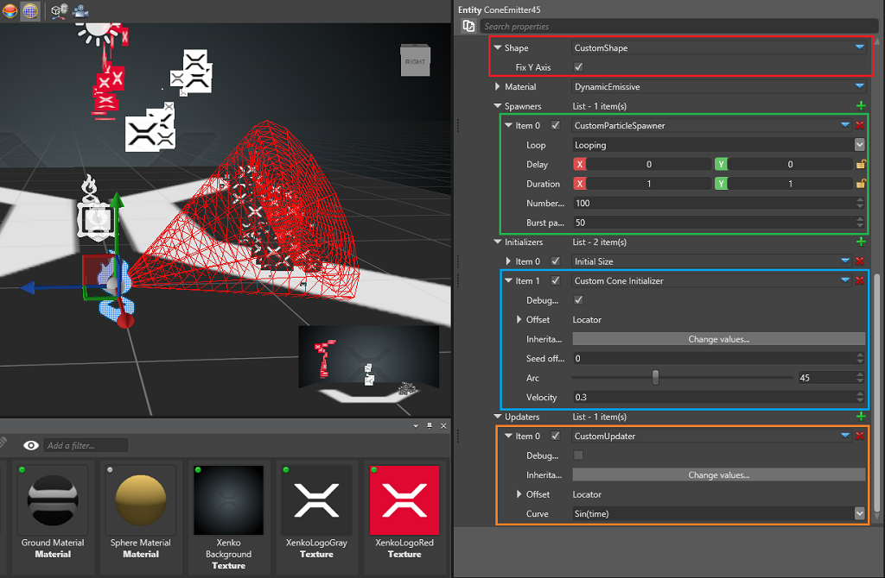

Tutorial: Custom particles
Warning
Приносим свои извинения за неудобства. Для этой страницы нет перевода на русский язык. Она будет отображаться на английском языке.
Intermediate Artist Programmer
This walkthrough shows how you can create custom extensions for the particle system, providing functionality not available in the core engine.
If you're not familiar with editing particles, see Create particles.
Start by creating a new Sample: Particles project.

This project contains different scenes that demonstrate different ways to use particles. Open the CustomParticles scene.
There are three particle entities in the scene: ConeEmitter15, ConeEmitter30, and ConeEmitter45.
Select one of the particle entities. In the Property Grid, navigate to its source particle system and expand the emitter.

There are four custom elements in this emitter:
The custom spawner is similar to the spawn-per-second spawner, but also emits a burst of particles every time it loops.
The custom initializer initially positions the particles in a cone shape and sets their velocity accordingly.
The custom updater operates on a new particle field named RactangleXY, allowing the shape builder to use non-uniform sizes when building the billboards.
The custom shape builder is similar to the billboard with two additions. It can create non-uniform rectangles, rather than the standard squares, and it can align (fix) the rectangle's Y axis to the world's Y axis rather than the camera space.
Spawner
We'll create a spawner which emits particles per second and in bursts every few seconds. We could do this by adding two different spawners, but for this sample we'll combine them.
[DataContract("CustomParticleSpawner")] // Used for serialization, a good practice is to have the data contract have the same name as the class
[Display("CustomParticleSpawner")]
public sealed class CustomParticleSpawner : ParticleSpawner
{
[DataMemberIgnore]
private float carryOver; // Private members do not appear on the Property Grid
[DataMember(100)] // When data is serialized, this attribute decides its priority
[Display("Number of particles")] // This is the name which will be displayed on the Property Grid
public float SpawnCount { get; set; }
[DataMemberIgnore]
private float burstTimer; // Private members do not appear on the Property Grid
[DataMember(200)] // When data is serialized, this attribute decides its priority
[Display("Burst particles")] // This is the name which will be displayed on the Property Grid
public float BurstCount {get;set;}
...
public override int GetMaxParticlesPerSecond()
{
return (int)Math.Ceiling(SpawnCount) + (int)Math.Ceiling(BurstCount);
}
public override void SpawnNew(float dt, ParticleEmitter emitter)
{
// State is handled by the base class. Generally you only want to spawn particle when in active state
var spawnerState = GetUpdatedState(dt, emitter);
if (spawnerState != SpawnerState.Active)
return;
// Calculate particles per second
var toSpawn = spawnCount * dt + carryOver;
var integerPart = (int)Math.Floor(toSpawn);
carryOver = toSpawn - integerPart;
// Calculate burst particles
burstTimer -= dt;
if (burstTimer < 0)
{
burstTimer += 1f;
integerPart += (int)Math.Floor(BurstCount);
}
// Lastly, tell the emitter how many new particles do we want to spawn this frame
emitter.EmitParticles(integerPart);
}
}
This class mimics the ParticleSpawner, with the addition of a BurstCount and a burstTimer to control how often and how many particles are spawned in bursts.
The SpawnNew method is called every frame to allow the spawner to calculate how many new particles should be emitted in the emitter based on the elapsed time.
As an exercise, try implementing the following changes:
- Rather than one-second bursts, create a property and have the user control the timing.
- Remove the spawn-per-second fields and make it a pure burst spawner.
Our spawner only emits particles, but doesn't set any fields. This is done by the initializer.
Initializer
We want to place the particles in a cone and shoot them outwards when they spawn.
[DataContract("CustomParticleInitializer")]
[Display("Cone Initializer")]
public class CustomParticleInitializer : ParticleInitializer
{
[DataMember(100)]
[DataMemberRange(0, 120, 0.01, 0.1)]
[Display("Arc")]
public float Angle = 20f;
[DataMember(200)]
[Display("Velocity")]
public float Strength = 1f;
public CustomParticleInitializer()
{
RequiredFields.Add(ParticleFields.Position);
RequiredFields.Add(ParticleFields.Velocity);
RequiredFields.Add(ParticleFields.RandomSeed);
}
public unsafe override void Initialize(ParticlePool pool, int startIdx, int endIdx, int maxCapacity)
{
...
}
}
Our initializer simply defines an angle for the cone and strength for the velocity. Any scaling and rotation of the cone come from the location inheritance and offset, which are common for all initializers and updaters and are ready to use. For more information, see the ParticleInitializer.
The constructor for the initializer is important, as it sets the list of required fields we'll use. The initializer sets the particle's position and velocity, so we add those, and needs to generate some randomness, so we also add the random seed which we are going to use. All particles have Life and RandomSeed fields when they spawn.
// This method is called for all new particles once the initializer is added to an emitter. Rather than updating all of them, we are given a starting and end indices and must only use particles in the defined range.
public unsafe override void Initialize(ParticlePool pool, int startIdx, int endIdx, int maxCapacity)
{
// Make sure the fields exist and avoid illegal memory access
if (!pool.FieldExists(ParticleFields.Position) || !pool.FieldExists(ParticleFields.Velocity) || !pool.FieldExists(ParticleFields.RandomSeed))
return;
var posField = pool.GetField(ParticleFields.Position);
var velField = pool.GetField(ParticleFields.Velocity);
var rndField = pool.GetField(ParticleFields.RandomSeed);
var range = (float) (Angle*Math.PI/180f);
var magnitude = WorldScale.X;
var i = startIdx;
while (i != endIdx)
{
var particle = pool.FromIndex(i);
var randSeed = particle.Get(rndField);
var x = (randSeed.GetFloat(RandomOffset.Offset2A + SeedOffset) - 0.5f)*range;
var z = (randSeed.GetFloat(RandomOffset.Offset2B + SeedOffset) - 0.5f) * range;
var u = (randSeed.GetFloat(RandomOffset.Offset2A + SeedOffset) - 0.5f) * range;
var v = (randSeed.GetFloat(RandomOffset.Offset2B + SeedOffset) - 0.5f) * Math.PI;
var xz = (float) Math.Sin(u);
var particleRandPos = new Vector3((float) Math.Cos(v) * xz, (float)Math.Sqrt(1 - u*u), (float)Math.Sin(v) * xz);
particleRandPos.Normalize();
particleRandPos *= magnitude;
WorldRotation.Rotate(ref particleRandPos); // WorldRotation is the current rotation of our initializer. We can use it as it is, since inheritance and offset are already taken in account.
(*((Vector3*) particle[posField])) = particleRandPos + WorldPosition; // WorldPosition is the current position of our initializer. We can use it as it is, since inheritance and offset are already taken in account.
(*((Vector3*) particle[velField])) = particleRandPos * Strength;
i = (i + 1) % maxCapacity;
}
}
Updater
We want our updater to change a particle's width and height every frame based on a simple sine function over the particle's life.
Because there's no such field yet, start by creating a new particle field. Let's name it RactangleXY:
public static class CustomParticleFields
{
public static readonly ParticleFieldDescription<Vector2> RectangleXY = new ParticleFieldDescription<Vector2>("RectangleXY", new Vector2(1, 1));
}
The field has type Vector2, since we only need two values for the width and the height. No fields are added automatically to the particles, so even if you have many declarations, the particle size won't change. Fields are only added when we plug a module which requires them, such as the custom updater below.
For API reference, see ParticleUpdater.
[DataContract("CustomParticleUpdater")] // Used for serialization so that our custom object can be saved. A good practice is to have the data contract have the same name as the class name.
[Display("CustomUpdater")] // Unless a display name is specified, the name of the data contract will be used. Sometimes we want to hide it and display something simpler instead.
public class CustomParticleUpdater : ParticleUpdater
{
[DataMemberIgnore] // Public fields and properties are serialized. We want to avoid this in some cases and can use the DataMemberIgnore attribute.
public override bool IsPostUpdater => true; // By making this updater a post-updater we can ensure it will be called for both newly spawned and old particles (1 frame or older)
[DataMember(10)] // This public field will be serialized. With the DataMember attribute we can specify the serialization and display order.
public AnimatedCurveEnum Curve; // Refer to the actual sample code for AnimatedCurveEnum
// In the constructor we have to specify all the fields we need for this updater.
// It calculates our newly created field by using the particle's lifetime so we need "RectangleXY" and "Life"
public CustomParticleUpdater()
{
// This is going to be our "input" field
RequiredFields.Add(ParticleFields.Life);
// This is the field we want to update
// It is not part of the basic fields - we created it just for this updater
RequiredFields.Add(CustomParticleFields.RectangleXY);
}
// The update method is called once every frame and requires the updater to iterate over all particles in the pool and update their fields.
// If the updater is a post-updater it will get called **after** spawning new particles for this frame and might overwrite their initial values on the same frame
// If the updater is not a post-updater it will get called **before** spawning new particles for this frame and can't overwrite their initial values for the first frame
public override void Update(float dt, ParticlePool pool)
{
...
}
}
Let's take a look at the Update method. The sample code is longer, but here we've trimmed it for the sake of simplicity.
public override void Update(float dt, ParticlePool pool)
{
// Make sure the fields exist and avoid illegal memory access
if (!pool.FieldExists(ParticleFields.Life) || !pool.FieldExists(CustomParticleFields.RectangleXY))
return;
var lifeField = pool.GetField(ParticleFields.Life);
var rectangleField = pool.GetField(CustomParticleFields.RectangleXY);
// X and Y sides depend on sin(time) and cos(time)
foreach (var particle in pool)
{
// Get the particle's remaining life. It's already normalized between 0 and 1
var lifePi = particle.Get(lifeField) * MathUtil.Pi;
// Set the rectangle as a simple function over time
particle.Set(rectangleField, new Vector2((float)Math.Sin(lifePi), (float)Math.Cos(lifePi)));
}
}
The updater will animate all particles' RectangleXY fields with a simple sine and cosine functions over their life.
In the next step we'll demonstrate how to display the created values.
Shape builder
The shape builder is the class which takes all particle fields and creates the actual shape we are going to render. It's a little long, so let's break it down.
public override int QuadsPerParticle { get; protected set; } = 1;
The engine draws quads using 1 quad = 4 vertices = 6 indices, but we can only specify the number of quads we need. For a rectangle we need only one.
Note
The number of quads is important because the vertex buffer is allocated and mapped prior to writing out the vertex data. If we allocate smaller buffer it might result in illegal memory access and corruption.
public unsafe override int BuildVertexBuffer(ParticleVertexBuilder vtxBuilder, Vector3 inverseViewX, Vector3 inverseViewY,
ref Vector3 spaceTranslation, ref Quaternion spaceRotation, float spaceScale, ParticleSorter sorter)
This method is called when it needs our shape builder to iterate over all particles and build the shape. The ParticleVertexBuilder is the wrapper around our vertex stream. We'll use it to write out the vertex data for the particles.
inverseViewX and inverseViewY are unit vectors in camera space passed down to the shape builder if we need to generate camera-facing shapes.
foreach (var particle in sorter)
{
var centralPos = particle.Get(positionField);
var particleSize = sizeField.IsValid() ? particle.Get(sizeField) : 1f;
var rectangleSize = rectangleField.IsValid() ? particle.Get(rectangleField) : new Vector2(1, 1);
var unitX = invViewX * (particleSize * 0.5f) * rectangleSize.X;
var unitY = invViewY * (particleSize * 0.5f) * rectangleSize.Y;
// Particle rotation. Positive value means clockwise rotation.
if (hasAngle) { ... }
var particlePos = centralPos - unitX + unitY;
var uvCoord = new Vector2(0, 0);
// 0f 0f
vtxBuilder.SetAttribute(posAttribute, (IntPtr)(&particlePos));
vtxBuilder.SetAttribute(texAttribute, (IntPtr)(&uvCoord));
vtxBuilder.NextVertex();
// 1f 0f
particlePos += unitX * 2;
uvCoord.X = 1;
vtxBuilder.SetAttribute(posAttribute, (IntPtr)(&particlePos));
vtxBuilder.SetAttribute(texAttribute, (IntPtr)(&uvCoord));
vtxBuilder.NextVertex();
// 1f 1f
particlePos -= unitY * 2;
uvCoord.Y = 1;
vtxBuilder.SetAttribute(posAttribute, (IntPtr)(&particlePos));
vtxBuilder.SetAttribute(texAttribute, (IntPtr)(&uvCoord));
vtxBuilder.NextVertex();
// 0f 1f
particlePos -= unitX * 2;
uvCoord.X = 0;
vtxBuilder.SetAttribute(posAttribute, (IntPtr)(&particlePos));
vtxBuilder.SetAttribute(texAttribute, (IntPtr)(&uvCoord));
vtxBuilder.NextVertex();
renderedParticles++;
}
Our particles' width and height depend both on the uniform size field Size and the field we created earlier in this walkthrough, RectangleXY. From there, we need to set the positions and texture coordinates for the four corner vertices of our quad. The number of vertices we have to set is per particle four times the number of quads we requested.
You can add more complicated shapes or attributes here if your game requires them.
Conclusion
With these 4 custom modules you can add a lot of functionality to the particle engine and tailor behavior to your needs. Because they're all serialized and loaded in Game Studio, once you create them, you can use them directly from Game Studio, together with the core modules.
If you want to experiment with the modules, try adding a new .cs file to the CustomParticles.Game project. You can duplicate one of the existing classes, but don't forget to change the class name and the data contract to avoid collisions.
You can then reload the scripts in Game Studio. If they don't load, relaunch your project. If there are no compilation errors in your code you should see the new modules in the spawners, initializers, updaters and shape builders lists.